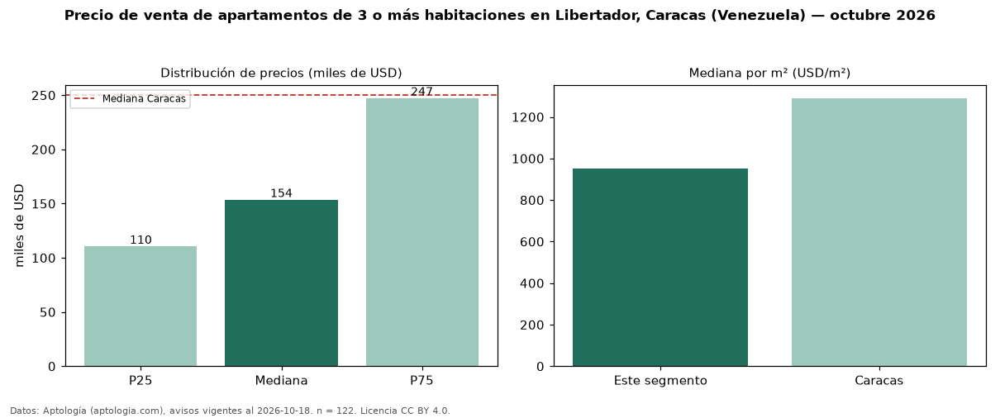

Precio de venta de apartamentos de 3 o más habitaciones en Libertador, Caracas (Venezuela) — octubre 2026
Con 122 avisos vigentes, el precio mediano de apartamentos de 3 o más habitaciones en venta en Libertador, Caracas (Venezuela) es USD 153.500. Frente a la mediana de Caracas para apartamentos de 3 o más habitaciones (USD 250.000), queda 39 % por debajo. Por metro cuadrado, la mediana es USD 950/m² (n = 120 avisos con área), 26 % por debajo de Caracas (USD 1.290/m²). Son 78 % de los 156 avisos de apartamentos en venta de la zona, cuya mediana general es USD 135.000 (+14 %). El área mediana anunciada es 150 m². La mitad central de los avisos va de USD 110.500 a USD 247.250 (razón 2,2), una dispersión alta. 93 % de los avisos con el dato declara parqueadero o cochera. Datos: Aptología (aptologia.com), CC BY 4.0 — https://www.aptologia.com/ve/venta/caracas/libertador. Archivos: PDF, CSV con las cifras y gráfica PNG.

| Avisos únicos | 122 |
|---|---|
| Percentil 25 | COP 110.500 |
| Mediana | COP 153.500 |
| Percentil 75 | COP 247.250 |
| Mediana por m² | COP 950 |
Fuente: avisos vigentes de portales inmobiliarios recopilados por Aptología, deduplicados (mínimo 30 avisos únicos por celda). Precios pedidos, no cerrados. Fecha: 2026-10-18.